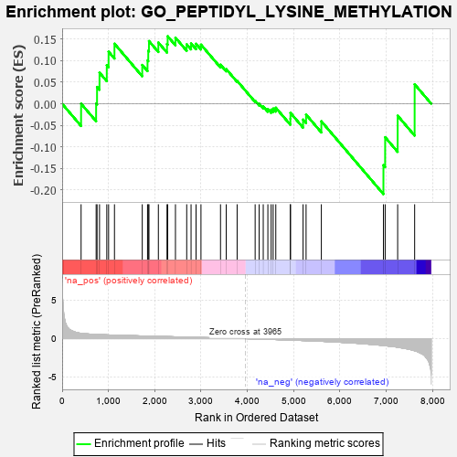
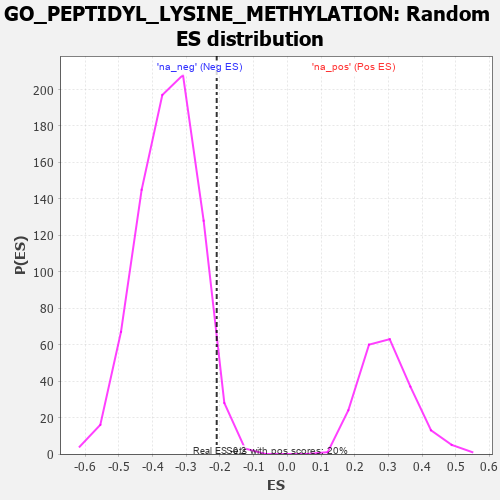

| | | Dataset | 7d |
| Phenotype | NoPhenotypeAvailable |
| Upregulated in class | na_neg |
| GeneSet | GO_PEPTIDYL_LYSINE_METHYLATION |
| Enrichment Score (ES) | -0.20960598 |
| Normalized Enrichment Score (NES) | -0.5921488 |
| Nominal p-value | 0.9698492 |
| FDR q-value | 1.0 |
| FWER p-Value | 1.0 |
Table: GSEA Results Summary

Fig 1: Enrichment plot: GO_PEPTIDYL_LYSINE_METHYLATION
Profile of the Running ES Score & Positions of GeneSet Members on the Rank Ordered List
| PROBE | GENE SYMBOL | GENE_TITLE | RANK IN GENE LIST | RANK METRIC SCORE | RUNNING ES | CORE ENRICHMENT | | 1 | EED | | | 409 | 0.690 | 0.0002 | Yes |
| 2 | WDR61 | | | 734 | 0.549 | 0.0005 | Yes |
| 3 | SETD3 | | | 754 | 0.544 | 0.0389 | Yes |
| 4 | SETD4 | | | 807 | 0.530 | 0.0721 | Yes |
| 5 | CTR9 | | | 964 | 0.492 | 0.0893 | Yes |
| 6 | MEN1 | | | 1003 | 0.483 | 0.1208 | Yes |
| 7 | KMT2A | | | 1130 | 0.458 | 0.1392 | Yes |
| 8 | KMT2E | | | 1730 | 0.350 | 0.0900 | Yes |
| 9 | RTF1 | | | 1844 | 0.329 | 0.1004 | Yes |
| 10 | SMAD4 | | | 1860 | 0.326 | 0.1230 | Yes |
| 11 | RBBP5 | | | 1875 | 0.323 | 0.1455 | Yes |
| 12 | KDM3A | | | 2078 | 0.294 | 0.1421 | Yes |
| 13 | PRDM5 | | | 2265 | 0.265 | 0.1385 | Yes |
| 14 | NSD3 | | | 2279 | 0.263 | 0.1566 | Yes |
| 15 | KDM1A | | | 2447 | 0.237 | 0.1533 | No |
| 16 | KDM6A | | | 2690 | 0.200 | 0.1378 | No |
| 17 | NSD2 | | | 2784 | 0.185 | 0.1400 | No |
| 18 | WDR5 | | | 2892 | 0.168 | 0.1391 | No |
| 19 | SMYD1 | | | 2998 | 0.150 | 0.1371 | No |
| 20 | SETD6 | | | 3420 | 0.087 | 0.0906 | No |
| 21 | KMT2C | | | 3544 | 0.069 | 0.0802 | No |
| 22 | NSD1 | | | 3779 | 0.031 | 0.0531 | No |
| 23 | GFI1 | | | 4168 | -0.037 | 0.0069 | No |
| 24 | PAX5 | | | 4255 | -0.051 | -0.0002 | No |
| 25 | SETD5 | | | 4343 | -0.067 | -0.0061 | No |
| 26 | SETD2 | | | 4443 | -0.084 | -0.0123 | No |
| 27 | SNW1 | | | 4514 | -0.096 | -0.0139 | No |
| 28 | CXXC1 | | | 4557 | -0.107 | -0.0112 | No |
| 29 | GATA3 | | | 4614 | -0.120 | -0.0092 | No |
| 30 | ATRX | | | 4929 | -0.184 | -0.0350 | No |
| 31 | SUZ12 | | | 4931 | -0.185 | -0.0212 | No |
| 32 | ASH1L | | | 5203 | -0.248 | -0.0368 | No |
| 33 | WDR82 | | | 5268 | -0.264 | -0.0251 | No |
| 34 | SMYD2 | | | 5598 | -0.344 | -0.0407 | No |
| 35 | DOT1L | | | 6939 | -0.897 | -0.1424 | No |
| 36 | DPY30 | | | 6976 | -0.923 | -0.0777 | No |
| 37 | DYDC1 | | | 7246 | -1.118 | -0.0277 | No |
| 38 | IWS1 | | | 7613 | -1.587 | 0.0451 | No |
Table: GSEA details [plain text format]

Fig 2: GO_PEPTIDYL_LYSINE_METHYLATION: Random ES distribution
Gene set null distribution of ES for GO_PEPTIDYL_LYSINE_METHYLATION